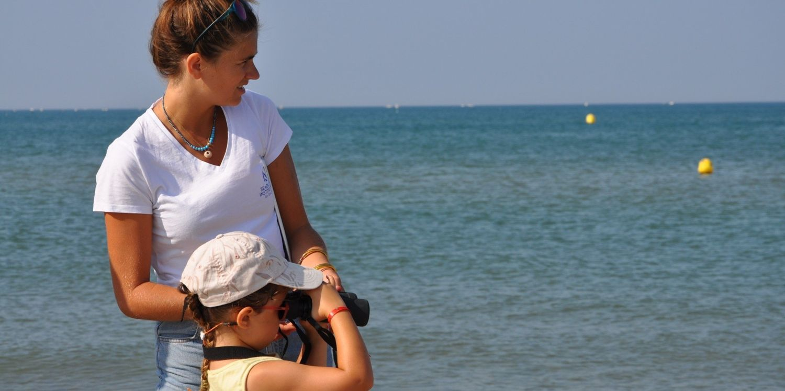
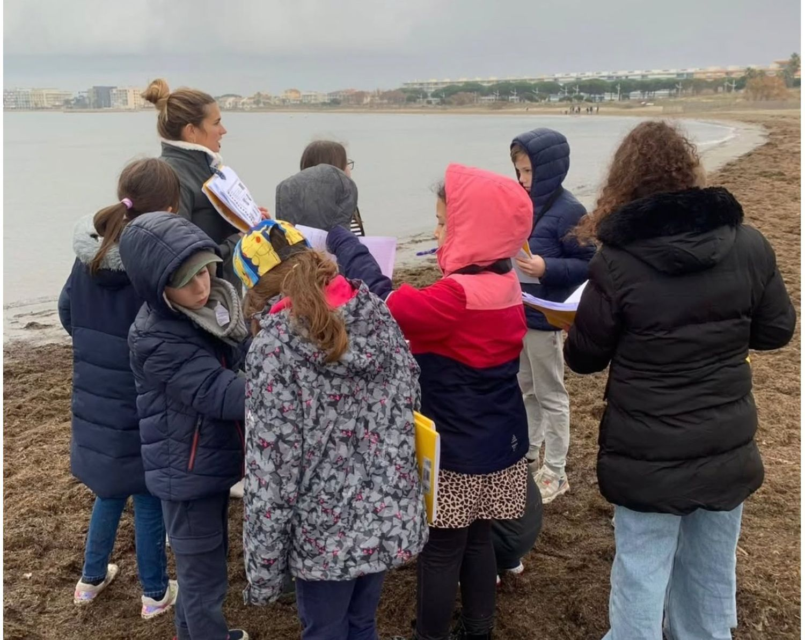

Dossier de préfiguration · Marseille, Bouches-du-Rhône · rentrée 2027
La mer au bout de la rue
À Marseille, la mer est à quelques arrêts de bus de chaque école. SEANATURA propose de la comprendre en classe, puis de l'explorer pour de vrai : ateliers ludiques, van-labo, aires marines éducatives et sorties en voilier.

Pourquoi Marseille
La mer est là. Il reste à la faire comprendre, et à y emmener les élèves
Vivre près de la mer ne veut pas dire la connaître. Beaucoup d'élèves la voient tous les jours sans savoir ce qui vit dessous, ni comment elle protège leur ville. Ici, chaque atelier peut déboucher sur le terrain, dans la semaine.
Les calanques comme salle de classe
Le Parc national des Calanques s'étend aux portes de Marseille, dans un contexte périurbain sans équivalent en Europe. Il travaille déjà avec un réseau d'associations d'éducation à l'environnement, que nous voulons rejoindre.
Un dispositif qu'Alice a déjà mené
Une classe prend en charge un petit morceau de littoral et décide de sa gestion, accompagnée par une association. Alice a suivi une classe de CM1 pendant deux ans dans ce cadre au Grau-du-Roi.
La mer à la journée, sans train ni hôtel
Antarctic est basé à Marseille. Pour une classe de la région, la sortie en mer tient en une journée : le coût se limite au bateau, sans transport longue distance ni hébergement.

Une région que nous connaissons
Alice a travaillé à la LPO PACA sur des inventaires naturalistes et des suivis bioacoustiques, puis en CPIE comme responsable du pôle biodiversité, avant deux années de médiation scolaire au Seaquarium Institut Marin. Mathieu a fait ses études et sa carrière d'ingénieur côtier à Montpellier, sur la façade méditerranéenne.
En France, nous n'avons pas à inventer le cadre : les classes de mer, les aires marines éducatives et l'éducation à l'environnement font partie de la culture des écoles. Ce que nous apportons, c'est un laboratoire qui se déplace, deux métiers de la mer et une année d'images rapportées du large.
Formats
Ce que nous proposons aux écoles et aux collèges
Les douze ateliers sont les mêmes qu'en Suisse. À Marseille, ils s'articulent avec les dispositifs que les écoles utilisent déjà, et avec des sorties de terrain toutes proches.
| Format | Durée | Pour qui | Contenu |
|---|---|---|---|
| Atelier découverte | 90 min | 1 classe | Deux ateliers en demi-groupes, dessins avant / après. |
| Journée van-labo | 1 jour | 2 à 4 classes en rotation | Le van dans la cour, quatre ateliers tournants par classe. |
| Parcours aire marine éducative | 6 à 8 séances sur l'année | 1 classe, du CM1 à la 3e | Ateliers en classe et sorties sur le site choisi par les élèves, état des lieux, conseil des enfants, actions de gestion. Nous accompagnons l'enseignant dans toute la démarche. |
| Sortie en mer | 1 jour | 1 classe entière | Sur le voilier Antarctic vers le Frioul ou Riou : comptage d'oiseaux et de dauphins, filet à plancton, hydrophone. |
| Hors temps scolaire | à la carte | Communes, centres de loisirs, événements | Stand van-labo, ateliers courts, exposition photo, fêtes de la mer. |
Premiers raccords avec les programmes : sciences du cycle 3 (CM1 à 6e), SVT et physique-chimie du cycle 4 (5e à 3e), et éducation au développement durable. À préciser atelier par atelier avec les conseillers pédagogiques. Pour les classes marseillaises, l'atelier 8 devient « De l'Huveaune à la mer ».
Pour les enseignants
Comment une école peut financer un parcours
Nous aidons chaque enseignant à monter son dossier. Plusieurs dispositifs existent déjà et peuvent se combiner.
Aires éducatives de l'OFB
L'Office français de la biodiversité verse un forfait de 5 000 € pour les deux premières années d'une nouvelle aire éducative. L'association qui accompagne la classe peut recevoir la subvention.
Part collective du pass Culture
Pour les collèges, dès la 6e. La culture scientifique fait partie de l'éducation artistique et culturelle : nous demanderons notre référencement pour que les ateliers puissent y être réservés.
Trousse à projets
La plateforme de financement participatif de l'Éducation nationale, utilisée notamment pour les classes de mer et les aires éducatives.
Coopérative, commune, fondations
La coopérative scolaire et la commune complètent souvent. Des fondations soutiennent les classes de mer, en priorité pour les écoles en éducation prioritaire.
La sortie sur Antarctic coûte 4 000 € la journée pour 33 personnes, soit environ 150 € par élève avec l'encadrement réglementaire (1 adulte pour 5 enfants). Nous cherchons des mécènes pour réduire ce reste à charge, afin que la sortie en mer ne soit pas réservée aux écoles qui en ont les moyens.
Calendrier
Ce qu'il faut réunir pour ouvrir en septembre 2027
- Décembre 2026
L'association
Création de SEANATURA en association loi 1901 à Marseille, pour pouvoir déposer les premières demandes dès janvier.
- Janv. – févr. 2027
Premières demandes
Dossiers de financement de la préparation, rencontres avec le Parc national, le réseau d'éducation à l'environnement régional et des écoles pilotes.
- Mars – juin 2027
Fabrication et pilotes
Tête de requin imprimée en 3D, canal à houle, puis trois séances pilotes dans des classes marseillaises.
- Été 2027
Van et programmation
Aménagement du van, calendrier avec les écoles, candidatures des premières aires marines éducatives.
- Septembre 2027
Lancement
Première année scolaire complète. Premières sorties sur Antarctic au printemps 2028.
Ce que nous cherchons
Des enseignants prêts à accueillir une séance pilote au printemps 2027, en école élémentaire ou en collège. Des partenaires de terrain pour les aires marines éducatives. Et les premiers financeurs de la préparation, de mars à août 2027.
Nous sommes tous les deux disponibles pour nous y consacrer, à mi-temps pendant la préparation puis à plein temps.
Parlons-en, et venez essayer le canal à houle.
- Alice Beaujoin
- albeaujoin@gmail.com · +33 6 84 84 26 16
- Mathieu Soulayrol
- mathieu.soulayrol@gmail.com · +33 7 55 68 96 55
- Projet
- SEANATURA, association en cours de création. Nom provisoire.